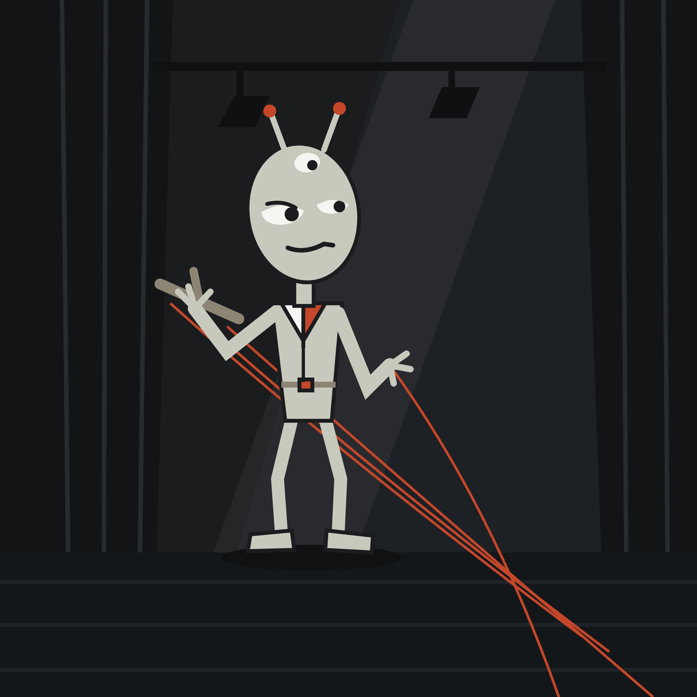
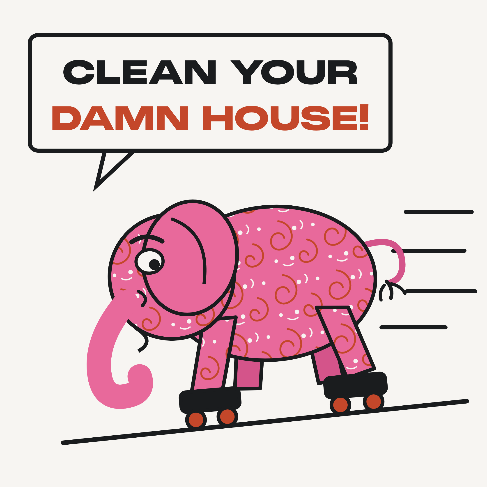

There’s a scene in Men In Black (the original, not the bad remake) where, upon examining a body at the morgue, Will Smith’s character discovers a little alien hiding inside the head of a human body. Morbidity of the setting notwithstanding (and your personal opinions on Will Smith in the post-Oscar-slap era of the problematic celebrity), I believe this to be an apt metaphor for what it’s like to live with a mind that doesn’t always cooperate.
Hang with me now, faithful reader, as I try to explain:
Every one of us has a brain, and the brain can do wonderful things like help us plan our schedules, make a mean shrimp scampi, and learn how to do long division.
The mind, however, is a different animal. In fact, it’s really like its own species. It’s the one that tells you you’re forgetting something important at 3am and won’t shut up about it. It’s the one that reminds you, unprovoked mid-conversation, of the time you spelled “patio” wrong in the 3rd grade spelling bee and cried on stage in front of everyone’s parents. It’s the one that forgets how to do long division.

Our mind is consistently at odds with our brain. It can feel like our mind is a full-time employee whose sole job it is to sabotage our brain’s daily efforts to live a good life.
It tells us what we did wrong, but rarely reminds us of what we did right.
It distracts us from what’s important and takes us on a guided tour of our long history of personal failings.
Your mind is a cruel puppet master. It’s the little alien in your head, pulling the strings, making you dance to the beat of a drum that’s not yours.
It makes us freeze when we should act, and act when we should pause and reconsider.
Dutiful reader, your mind is a cruel puppet master. It’s the little alien in your head, pulling the strings, making you dance to the beat of a drum that’s not yours.
It is with a forlorn and heavy heart that I tell you, dearest reader, that you cannot get rid of the puppet master. Your mind and all its clever machinations will be with you forever.
But lo, there be yet hope! Just because your mind is a skilled puppeteer does not mean that you have to be its marionette. The key to breaking free of the puppet master is what lies at the heart of Acceptance and Commitment Therapy (ACT).
The ACT approach is informed by a philosophy of mind called Relational Frame Theory (RFT), which posits that human minds automatically and involuntarily link words, images, and experiences together through language, and once those links are formed, you cannot simply choose to unlink them. In plainer terms: your mind is a machine built for making connections, and it never once asks your permission before it makes one.
This proposition is antithetical to most of our assumptions about our minds, namely, that we have any control over the contents of our thoughts. Some might bristle at this notion. Well, bristle all you want — it doesn’t change the fact that when I tell you about the pink paisley-printed elephant on roller skates who sounded just like Morgan Freeman when it told you to, “Clean your damn house!”, you couldn’t help but imagine it.

The point is that your mind simply reacts with whatever it comes into contact. Over the past several decades, countless research studies have confirmed RFT’s scientific basis, validating the theory and its central tenets. Your brain really does have a mind of its own.
The puppet master isn’t a glitch. He’s not a bad update your brain needs to install, or a virus some part of you picked up along the way. He’s the system, working exactly as designed. Every connection this capricious creature has ever made is a string he built the moment you learned language, years before anyone thought to ask if you consented to the arrangement.
He didn’t sneak in. He was elected at birth and given a lifetime appointment.
So if firing him isn’t an option, stalwart reader, what exactly are we supposed to do with him?
You stop treating the puppet master like a director, and you start treating him like what he actually is: a guy backstage, in a booth, holding some strings.
That’s the whole move. Psychologists call it cognitive defusion, one of the central skills taught in ACT, and it asks something almost insultingly simple of you: don’t argue with the thought, don’t correct it, don’t try to drown it out with a louder, nicer thought standing next to it. Just notice it for what it is. Words. A mental event. A weird little guy who happens to really, deeply, professionally like puppets.
Here’s the part that trips people up. Defusion doesn’t make the puppet master go quiet. He’ll still show up with his usual material: the 3am inventory of everything you’re forgetting, the unsolicited highlight reel of your worst moments, the confident prediction that this (whatever ‘this’ is this week) is the one that finally does you in.
He’s not going on vacation. He’s not getting fired. There are no term limits for the puppet master.
What changes is your response. Right now, when he pulls a string, you dance. That’s fusion — the state of being so tangled up in a thought that you can’t tell where the thought ends and you begin. Defusion is the moment you notice the string before your leg moves. You feel the tug, you clock the guy backstage, and you get to decide, for maybe the first time, whether this particular dance is one you actually want to do.
You feel the tug, you clock the guy backstage, and you get to decide, for maybe the first time, whether this particular dance is one you actually want to do.
Try this. Take a thought that’s been pulling your strings lately, something like “I’m going to mess this up” or “nobody actually wants me around.” Now, instead of immediately buying into it, see if you can imagine that sweet nothing being whispered into your ear by a strange little alien who just adores puppets.
Notice what just happened. The thought didn’t get quieter. It didn’t get more true, either. It just moved. A second ago it was the voice of God, handing down a verdict. Now it’s a guy, backstage, saying his line. Same words. Completely different relationship to them.
Bizarre? Yes. Nonsensical? Also yes. Effective? That’s what the evidence says.
That’s defusion in miniature. It’s not a trick to make the thought disappear. It’s a way of remembering, string by string, that you are not the puppet, you’re the guy who’s allowed to notice he’s being pulled. With time, the idea is that you can move away from the mind’s coercive control (little alien in Men In Black), and toward harmonious collaboration (Remy and Chef Linguine in Ratatouille).
You are not the puppet, you’re the guy who’s allowed to notice he’s being pulled.
Next up in the series: what to actually do once you’ve spotted the strings, because noticing them is only half the job.